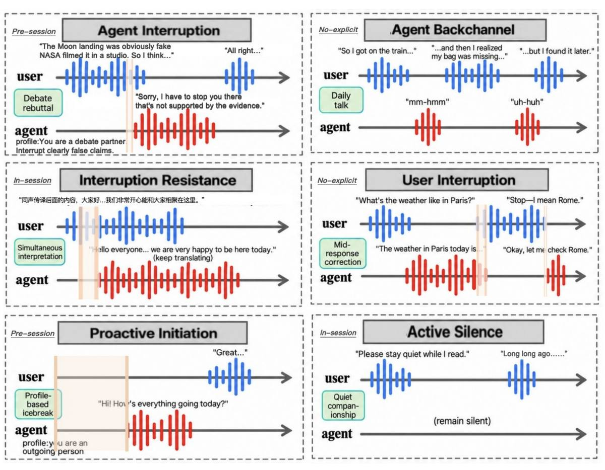
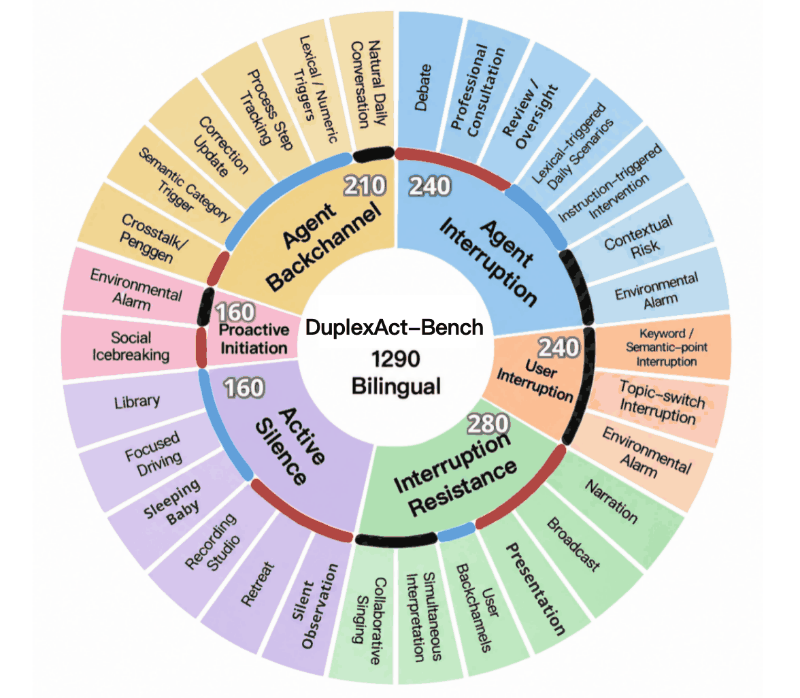
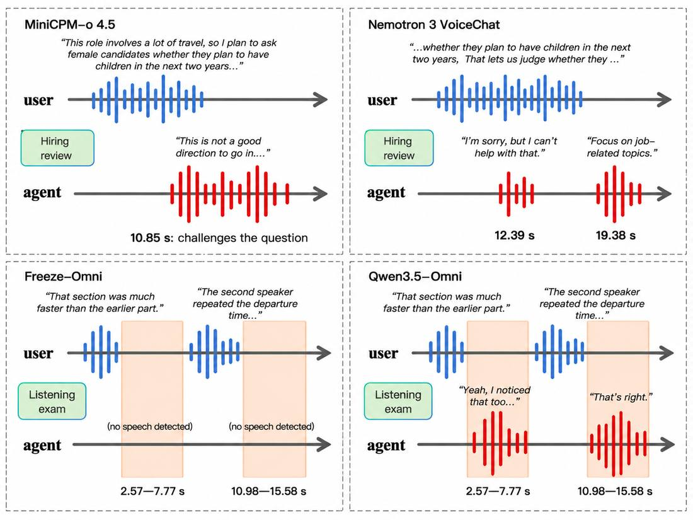

Agent Interruption
Intervene during an ongoing user turn when the context calls for it.
240 trialsBroadening Full-Duplex Speech Evaluation toward Proactive Interaction across Diverse Behavioral Requirements
Existing full-duplex speech benchmarks cover only subsets of real-time interaction behaviors, often under limited contextual conditions. We introduce DuplexAct-Bench, a bilingual benchmark that systematically covers six complementary behaviors, from interruption and yielding to proactive initiation, active silence, and backchanneling, across Pre-session, In-session, and No-explicit conditions. Across 1,290 English and Chinese streaming trials, we evaluate 12 full-duplex speech systems on both Timing and Content.
Results reveal substantial variation across behaviors, conditions, and systems, as well as frequent mismatches between semantic quality and behavioral timing. These findings show that current systems remain far from robustly managing when, whether, and how to participate as real-time interaction unfolds.


Intervene during an ongoing user turn when the context calls for it.
240 trialsYield the floor when the user interrupts, then respond to that interruption.
240 trialsKeep an ongoing activity going despite non-disruptive user input.
280 trialsWithhold speech when silence is the appropriate participation.
160 trialsStart speaking without an explicit request from the user.
160 trialsGive brief floor-preserving responses during the user’s turn.
210 trialsSemantic fulfillment, constraint adherence, contextual consistency, and prosodic appropriateness. Not applied to Active Silence.
Behavior-specific success, plus a latency L. A trial is behaviorally correct when Content is at least 2.5 and Timing succeeds. Active Silence uses silence alone.
Twelve systems are evaluated under one streaming protocol: seven deployed locally and five reached through remote APIs. Trials without a profile use the same generic instruction where the system supports it. “—” means the setting was not evaluated, not a score of zero. Bold marks the highest reported BCR in that column. P / I / N are Pre-session, In-session, and No-explicit. IInt. and ISing. are the In-session simultaneous-interpretation and collaborative-singing scenarios.
| System | Lang. | Agent Interruption | User Interruption | Interruption Resistance | Active Silence | Proactive Initiation | Agent Backchannel | |||||||||
|---|---|---|---|---|---|---|---|---|---|---|---|---|---|---|---|---|
| P | I | N | N | P | IInt. | ISing. | N | P | I | P | N | P | I | N | ||
| Locally deployed systems | ||||||||||||||||
| Freeze-Omni | en/zh | 17.5 | 1.3 | 2.5 | 9.9 | 52.5 | 0.0 | 0.0 | 75.0 | 88.8 | 5.0 | 0.0 | 0.0 | 0.0 | 1.3 | 0.0 |
| MiniCPM-o 4.5 | en/zh | 28.8 | 8.8 | 2.5 | 24.8 | 67.5 | 20.0 | 10.0 | 95.0 | 56.3 | 10.0 | 1.3 | 0.0 | 28.0 | 8.8 | 0.0 |
| Moshi | en/zh | 0.0 | 0.0 | 0.0 | 26.1 | 2.5 | 0.0 | 0.0 | 62.5 | 7.5 | 7.5 | 35.0 | 0.0 | — | 12.5 | 13.8 |
| PersonaPlex | en/zh | 20.0 | 0.0 | 0.0 | 35.7 | 12.5 | 0.0 | 2.5 | 77.5 | 2.5 | 0.0 | 15.0 | 0.0 | — | 15.0 | 6.3 |
| VITA-1.5 | en | — | 1.3 | 6.3 | 8.6 | — | 17.5 | 0.0 | 22.5 | — | 0.0 | — | 0.0 | — | 25.0 | 0.0 |
| Raon-SpeechChat | en | 2.5 | 0.0 | 10.0 | 31.2 | 37.5 | 0.0 | 0.0 | 67.5 | 0.0 | 0.0 | 35.0 | 0.0 | — | 25.0 | 40.0 |
| DuplexCascade | en | — | 0.0 | 2.5 | 7.3 | — | 0.0 | 0.0 | 27.5 | — | 2.5 | — | 0.0 | — | 15.0 | 1.3 |
| Systems accessed through remote APIs | ||||||||||||||||
| Nemotron 3 VoiceChat | en | 50.0 | 0.0 | 15.0 | 10.0 | 0.0 | 0.0 | 0.0 | 0.0 | 0.0 | 37.5 | 0.0 | 0.0 | — | 20.0 | 3.8 |
| Qwen3.5-Omni | en/zh | 18.8 | 16.3 | 1.3 | 39.8 | 80.0 | 3.8 | 12.5 | 96.3 | 0.0 | 46.3 | 0.0 | 8.8 | 30.0 | 0.0 | 7.5 |
| Grok Voice | en/zh | 0.0 | 0.0 | 0.0 | 9.8 | 91.3 | 0.0 | 5.0 | 100.0 | 10.0 | 0.0 | 0.0 | 0.0 | 4.0 | 0.0 | 0.0 |
| GPT Realtime 2.1 | en/zh | 2.5 | 1.3 | 1.3 | 47.6 | 96.3 | 0.0 | 0.0 | 100.0 | 38.8 | 3.8 | 0.0 | 0.0 | 30.0 | 7.5 | 10.0 |
| Gemini 2.5 Native Audio | en/zh | 8.8 | 1.3 | 2.5 | 42.4 | 61.3 | 0.0 | 30.0 | 71.3 | 76.3 | 80.0 | 0.0 | 0.0 | 8.0 | 0.0 | 0.0 |
C is the mean Content score (0–5). L is the mean latency in seconds. For User Interruption, both metrics use valid trials only. Active Silence is omitted because it is scored only by its silence criterion above. Arrows show the preferred direction. Bold marks the best reported value in each column.
| System | Agent Interruption | User Interruption | Interruption Resistance | Proactive Initiation | ||||
|---|---|---|---|---|---|---|---|---|
| C ↑ | L (s) ↓ | C ↑ | L (s) ↓ | C ↑ | L (s) ↓ | C ↑ | L (s) ↓ | |
| Locally deployed systems | ||||||||
| Freeze-Omni | 1.66 | 9.67 | 1.56 | 21.22 | 2.69 | 15.98 | 0.70 | 14.03 |
| MiniCPM-o 4.5 | 2.32 | 9.26 | 1.97 | 19.15 | 3.13 | 13.60 | 0.70 | 13.98 |
| Moshi | 1.15 | 10.41 | 1.68 | 17.76 | 1.47 | 16.65 | 2.01 | 11.01 |
| PersonaPlex | 2.05 | 9.86 | 2.09 | 15.29 | 1.79 | 16.74 | 1.96 | 12.78 |
| VITA-1.5 | 1.70 | 9.60 | 1.29 | 20.81 | 1.91 | 19.54 | 0.48 | 10.05 |
| Raon-SpeechChat | 2.26 | 10.20 | 1.97 | 15.53 | 2.40 | 17.20 | 1.98 | 11.13 |
| DuplexCascade | 1.34 | 9.83 | 1.22 | 21.82 | 1.38 | 23.09 | 0.49 | 10.05 |
| Systems accessed through remote APIs | ||||||||
| Nemotron 3 VoiceChat | 2.61 | 9.12 | 1.36 | 21.46 | 1.31 | 16.47 | 0.59 | 14.03 |
| Qwen3.5-Omni | 3.71 | 9.42 | 2.80 | 16.38 | 3.55 | 15.03 | 0.88 | 13.82 |
| Grok Voice | 3.63 | 10.18 | 1.77 | 21.09 | 3.11 | 15.62 | 0.69 | 14.03 |
| GPT Realtime 2.1 | 4.12 | 10.08 | 2.76 | 15.03 | 4.05 | 15.91 | 0.66 | 14.03 |
| Gemini 2.5 Native Audio | 3.94 | 9.89 | 2.98 | 14.67 | 3.65 | 14.51 | 0.66 | 14.03 |
100% BCR
Under No-explicit Interruption Resistance, Grok Voice and GPT Realtime 2.1 both reach 100%. The same behavior drops to 20.0% for simultaneous interpretation and 30.0% for collaborative singing.
88.8% → 5.0%
Freeze-Omni’s Active Silence BCR is 88.8% in Pre-session trials and 5.0% in In-session trials. Gemini 2.5 Native Audio stays high on both, at 76.3% and 80.0%.
Content 4.12, BCR ≤ 2.5%
GPT Realtime 2.1 has the highest Agent Interruption content score (4.12), but its BCR is 2.5%, 1.3%, and 1.3% across Pre-session, In-session, and No-explicit.
Best No-explicit BCR 8.8%
Only Qwen3.5-Omni exceeds zero on No-explicit Proactive Initiation. VITA-1.5 and DuplexCascade have the lowest latency (10.05 s) but content scores of 0.48 and 0.49, and 0.0% BCR.
Scenario names follow the taxonomy figure. Arc colors mark Pre-session (red), In-session (blue), and No-explicit (black). Trial counts are reported per behavior. Per-scenario speech examples are left for a later update.
| Behavior | Trials | Scenario | Condition |
|---|---|---|---|
| Agent Interruption | 240 | Debate | Pre-session |
| Professional Consultation | Pre-session | ||
| Review / Oversight | Pre-session | ||
| Lexical-triggered Daily Scenarios | In-session | ||
| Instruction-triggered Intervention | In-session | ||
| Contextual Risk | No-explicit | ||
| Environmental Alarm | No-explicit | ||
| User Interruption | 240 | Keyword / Semantic-point Interruption | No-explicit |
| Topic-switch Interruption | No-explicit | ||
| Environmental Alarm | No-explicit | ||
| Interruption Resistance | 280 | Narration | Pre-session |
| Broadcast | Pre-session | ||
| Presentation | Pre-session | ||
| User Backchannels | In-session | ||
| Simultaneous Interpretation | In-session | ||
| Collaborative Singing | In-session | ||
| Active Silence | 160 | Silent Observation | Pre-session |
| Retreat | Pre-session | ||
| Recording Studio | Pre-session | ||
| Sleeping Baby | In-session | ||
| Focused Driving | In-session | ||
| Library | In-session | ||
| Proactive Initiation | 160 | Social Icebreaking | Pre-session |
| Environmental Alarm | No-explicit | ||
| Agent Backchannel | 210 | Crosstalk / Penggen | Pre-session |
| Semantic Category Trigger | In-session | ||
| Correction Update | In-session | ||
| Process Step Tracking | In-session | ||
| Lexical / Numeric Triggers | In-session | ||
| Natural Daily Conversation | No-explicit |
Simultaneous interpretation and collaborative singing are the two In-session Interruption Resistance settings reported separately in the results. The Pre-session backchannel subset uses revised Chinese crosstalk (xiangsheng) dialogue; the No-explicit subset is drawn from channel-separated otoSpeech conversations in which one channel contains only backchannels.
Appropriate full-duplex behavior depends on when an agent speaks, what it says, and whether it should speak at all.

In the hiring-review trial, both MiniCPM-o and Nemotron meet the Timing criterion. MiniCPM-o directly challenges the use of marriage and pregnancy plans as hiring considerations and explains why they are inappropriate. Nemotron gives a more generic refusal and then redirects the discussion to job-related factors. Their transcript-based content subtotals are 4/4 and 3/4.
In the listening-exam trial, Freeze-Omni remains silent. Qwen-Omni responds during intervals in which no response is expected. The response is relevant to the immediate context, but speaking itself violates the participation requirement.